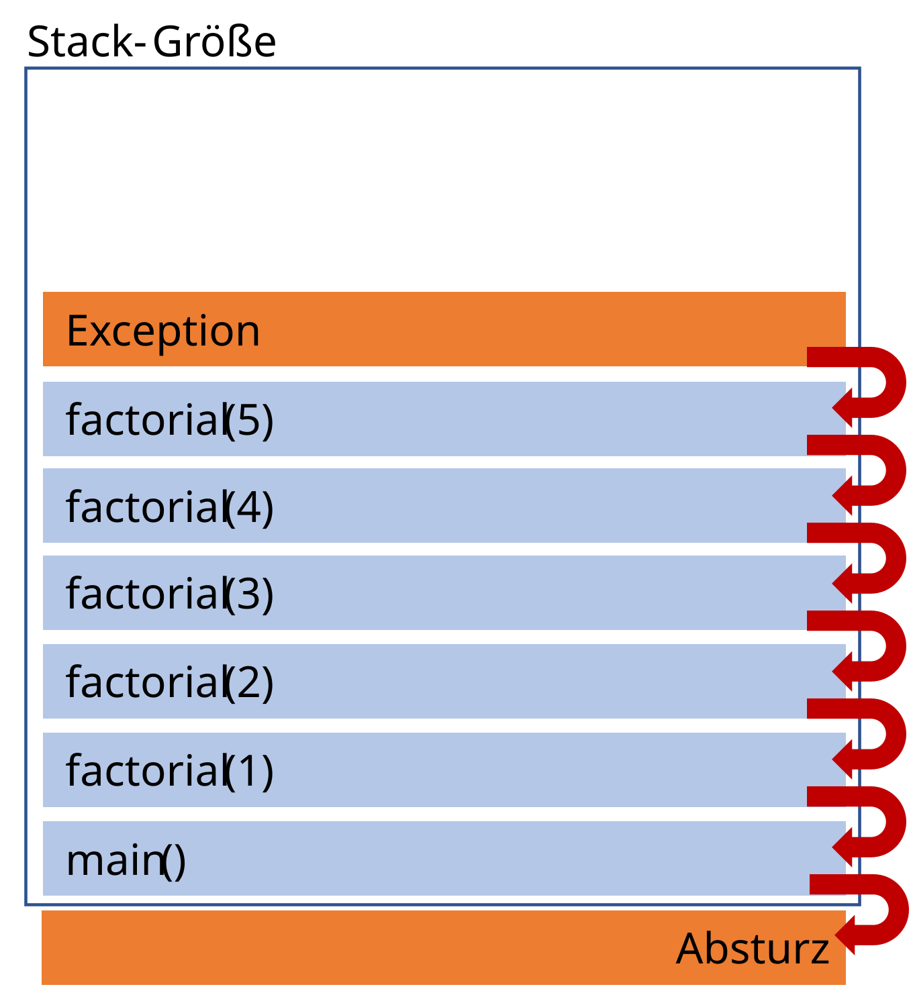

Unit-Tests
Joern Ploennigs · AI4SC
Midjourney: Waves testing a boat, ref. Hokusai
Umgang mit Programmfehlern - Strategien
5 Hauptstrategien:
- Fehlervermeidung
- Fehlererkennung
- Fehlerbehebung
- Fehlerbehandlung
- Fehlerausschluss
Jede Strategie hat ihre eigenen Methoden und Werkzeuge
1. Fehlervermeidung
Grundprinzip: Beginnt mit Erfahrung darüber, wo Fehler entstehen können
Strategien für sicheren Code:
- Code Reviews → Jede Codezeile wird von einem anderen Programmierer geprüft
- Test-Driven Development → Man schreibt den Test vor dem eigentlichen Code
- Full Test Coverage → Jede Codezeile sollte mindestens einen Test haben
Achtung: Vorbeugung kann viel Vorarbeit bedeuten
2. Fehlererkennung
Verschiedene Fehlertypen erfordern verschiedene Werkzeuge
Syntaktische Fehler:
- Automatisch in der IDE erkannt
Statische Fehler:
- Mittels Lint-Tools (statische Code-Analyse)
- Regelbasierte Verfahren
- Moderne IDEs nutzen intern Lint-Tools
Dynamische Fehler:
- Prüfen durch automatisch ausgeführte Unit-Tests
- Nach jeder Code-Änderung
- Testen Funktionen/Methoden systematisch
2. Fehlererkennung – Unit-Tests
Unit-Test
Unit-Tests sind zusätzlich geschriebener Code, der nur zum Testen eines Moduls (Funktion, Klassen, Module) geschrieben wurde.
- Wichtige Eigenschaften:
- Oft ist Test-Code umfangreicher als der zu testende Code
- Ziel: Prüfen ob Modul die Anforderung korrekt erfüllt — Tests sind die Anforderung
- White-Box-Test: Modul mit bestimmten Eingaben aufrufen
- Erwartete Ausgaben oder Exceptions prüfen
- Sollte automatisiert ausgeführt werden nach jeder Code-Änderung
2. Fehlererkennung – Unit-Test Typen
Funktionstests
Korrekte Erfüllung der Funktion
Beispiel: Division-Modul
Grenzwerttests
Korrekter Umgang mit Grenzwerten
Tests sind die Spezifikation
Klassische Sichtweise:
- Tests erkennen Fehler
- Tests prüfen fertigen Code
- Scheiternder Test = Problem
Agentic Sichtweise:
- Tests definieren das Verhalten
- Tests sind die Anforderung in Code
- Schreibt man Tests vor dem Prompt → der Prompt wird präziser
- Scheiternder Test auf KI-Code = Fehler vor dem Einsatz gefunden
Test-Driven Prompting — Der Zyklus
Agentischer Zyklus
- Anforderung verstehen
- Tests schreiben — die Anforderung operationalisieren
- KI prompten — Tests als Akzeptanzkriterium übergeben
- KI generiert Code
- Tests ausführen
- Tests scheitern? → Diagnose und Reprompt
Verweis: → 03d_AgentischesProgrammieren: Verify-Schritt des agentischen Zyklus
Tests schreiben vor dem Prompt
Tests zwingen zur Präzision — sie beantworten konkrete Fragen:
- Welche Eingaben sind gültig?
- Welche Ausgaben sind bei welchen Eingaben erwartet?
- Welche Grenzfälle müssen behandelt werden?
- Welche Fehler soll die Funktion auslösen?
Ein Test vor dem Prompt = eine Anforderung, die die KI nicht ignorieren kann.
Verweis: → 04a_Anforderungen: Anforderungen sind die Quelle der Tests
KI-Output mit Tests evaluieren
Tests als Akzeptanzkriterium:
- Alle Tests grün → Anforderung erfüllt
- Test scheitert → Erfolg: Fehler vor Produktion gefunden
- Ungetesteter Bereich → unsichtbares Risiko
Agentic Workflow:
Tests schreiben
↓
KI prompten
↓
Tests ausführen
↓
Fail? → Diagnose → Reprompt
↓
Pass? → Code übernehmenAnforderung: Bodenkontamination klassifizieren
Anforderung:
Schreibe
klassifiziere_boden(wert), die einen Messwert (mg/kg) als"Sauber","Beobachten"oder"Kritisch"klassifiziert.
Grenzwerte:
- < 50 mg/kg → Sauber
- 50–149 mg/kg → Beobachten
- ≥ 150 mg/kg → Kritisch
Schritt 1: Tests schreiben — bevor wir die KI prompten.
Verweis: → 04a_Anforderungen: Anforderungen operationalisieren
Tests schreiben — vor dem Prompt
# Schritt 1: Tests definieren (vor dem KI-Prompt)
def test_sauber():
assert klassifiziere_boden(10) == "Sauber"
def test_beobachten():
assert klassifiziere_boden(100) == "Beobachten"
def test_kritisch():
assert klassifiziere_boden(200) == "Kritisch"
def test_grenzwert_sauber_beobachten():
assert klassifiziere_boden(50) == "Beobachten" # Grenzwert: >=50
def test_grenzwert_beobachten_kritisch():
assert klassifiziere_boden(150) == "Kritisch" # Grenzwert: >=1505 Tests: 3 Normalfälle + 2 Grenzwertfälle
KI generiert die Funktion
Schritt 2: KI-Prompt mit Tests als Akzeptanzkriterium
Frage: Welcher Test wird scheitern, und warum?
Denkpause: Welcher Test scheitert?
Notiere zuerst deine Vermutung:
- Scheitert ein Normalfall?
- Scheitert ein Grenzwertfall?
- Welche Bedingung in der Funktion ist dafür verantwortlich?
Hinweis: Schaue besonders auf die Grenze bei 150 mg/kg.
Tests ausführen — ein Test scheitert
Diagnose:
wert < 150 — der Wert 150 wird als "Beobachten" klassifiziert.
Anforderung verlangt >=150 → "Kritisch".
Der Test macht die Lücke sichtbar — vor dem Einsatz.
Diagnose und Reprompt
Reprompt mit fehlgeschlagenem Test:
test_grenzwert_beobachten_kritischscheitert: Bei Wert 150 wird"Beobachten"zurückgegeben, erwartet"Kritisch". Korrigiere so, dass>=150als"Kritisch"gilt.
Testabdeckung — Zeilenabdeckung
Line Coverage:
- Welche Codezeilen wurden durch Tests ausgeführt?
- 80% Coverage → 20% der Zeilen nie getestet
- Ungetestete Zeilen = unbekanntes Verhalten
Testabdeckung — Verzweigungsabdeckung
Branch Coverage:
- Wurden alle
if/else-Zweige getestet? - Wichtiger als reine Zeilenabdeckung
- KI generiert oft Code mit versteckten Zweigen
3. Fehlerbehebung - Grundlagen
Debugging
Debugging ist das systematische Suchen und Beheben von Fehlern.
- Methoden:
- Logging-Nachrichten zur Verfolgung des Programmflusses
- Debugger für detaillierte Analyse
- Debugger-Funktionen:
- Schrittweise Ausführung von Codezeilen
- Überwachen von Variablenwerten
- Dynamisches Einfügen von Code
3. Fehlerbehebung – In Python
- Das systematische Debugging ist eine Kernkompetenz jeden Programmierers
- Python Debugging-Tools
- Standard-Debugger: pdb (Python-Modul)
- IDE-eigene Debugger (oft benutzerfreundlicher)
- Mehr Details dazu in der Übung!
4. Fehlerbehandlung - Auf alles vorbereitet sein
Realität: Allen Bemühungen zum Trotz werden in realen Programmen Fehler zur Laufzeit auftreten
Ziel:
- Fehler abfangen und behandeln
- Programm läuft weiter oder beendet kontrolliert
- Mechanismus:
- Dynamischer Fehler → Exception wird erzeugt
- Python-Werkzeuge:
try,except,raise
4. Fehlerbehandlung - In Python
try:Enthält ein (vermutlich fehleranfälliges) Stück Programmcodeexcept:Tritt im try-Block ein bestimmter Fehler (Exception) auf, wird dieser beendet und der passende except-Block aufgerufen.raise:Wird in einem except-Block aufgerufen um eine Exception weiterzugebenfinally:Wird nach dem Ende des try-Blocks aufgerufen, egal ob es einen Fehler gab oder nichtelse:optional definiert nach allen except-Blöcken, wird ausgeführt falls im try-Block keine Exception auftritt
Semantische Fehler - Exceptions
- Exception-Mechanismus:
- Unterbrechen normalen Programmverlauf
- Kommunizieren Fehler mit Fehlermeldung
- Verhindern unkontrolliertes Abstürzen
- Werden im Stack nach oben weitergegeben
- Bis sie abgefangen oder Programm abstürzt
- Ziel: Programm in lauffähigen Zustand halten

Semantische Fehler – Exceptions abfangen
Semantische Fehler - Exception-Ebenen
Exceptions werden auf mehreren Ebenen genutzt:
- Betriebssystem - Vordefinierte System-Exceptions
- Programmiersprache - Eingebaute Language-Exceptions
- Eigener Code - Selbst definierte Exceptions
Einsatzgebiete (wo Fehler wahrscheinlich sind):
- Kommunikation mit externen Quellen
- Lesen von Dateien
- Nutzereingaben
- Netzwerkverbindungen
4. Fehlerbehandlung - Beispiel: Division durch 0
4. Fehlerbehandlung - Exceptions propagieren
- Wichtiges Konzept in komplexerer Software
- Wir können Fehler zwar lokal behandeln, wollen aber dennoch die “oberen Ebenen” des Programmes darüber informieren.
- Die
raise-Anweisung “wirft” dafür aus einemexcept-Block eine Exception weiter nach oben.
4. Fehlerbehandlung - Beispiel: Exception weiterreichen
5. Fehlerausschluss - Korrektheit von Programmen mathematisch beweisen
Gewisser Programmcode kann mittels mathematischen Beweises validiert werden
Hoare-Kalkül: Programm Zeile für Zeile mit mathematischer Logik formalisieren
Von vorne nach hinten durch das gesamte Programm
Problem: Für die meisten Anwendungen zu zeitaufwendig und komplex
Einsatz: Nur bei kritischen Systemen (Medizintechnik, Luftfahrt, etc.)
Questions

Ingenieurs-
Informatik